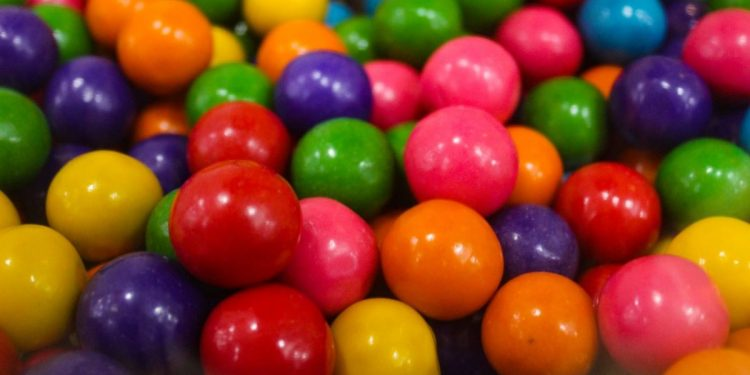
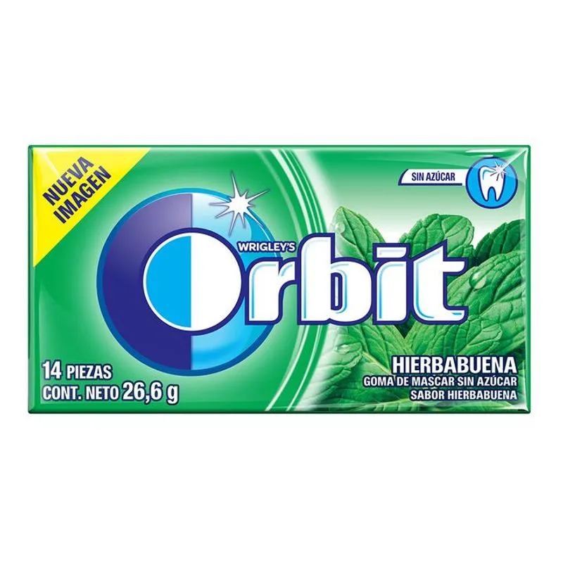

¡Explora los Diferentes Tipos de Chicle!
🍬 Tradicional
Elaborado con base de resina natural o sintética y endulzado con azúcar.
🦷 Sin Azúcar
Usa edulcorantes como xilitol o aspartamo, ideal para la salud dental.
🎈 De Burbujas
¡Diseñado para hacer pompas gigantes! Tiene una textura más elástica.